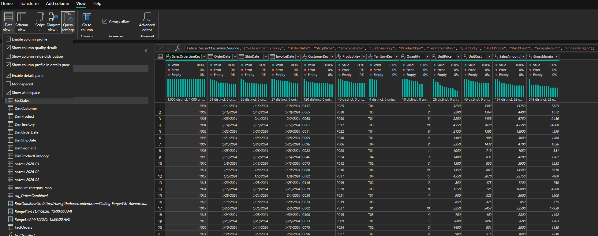
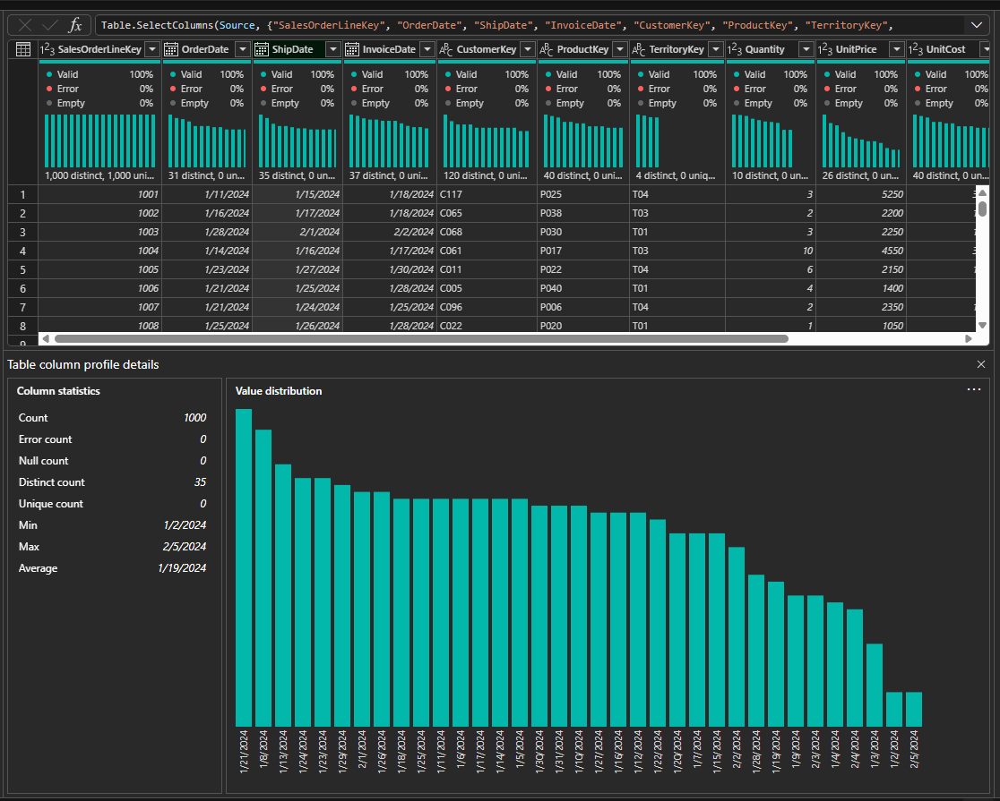
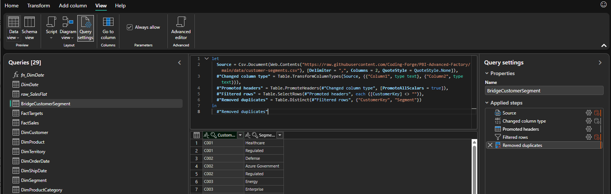
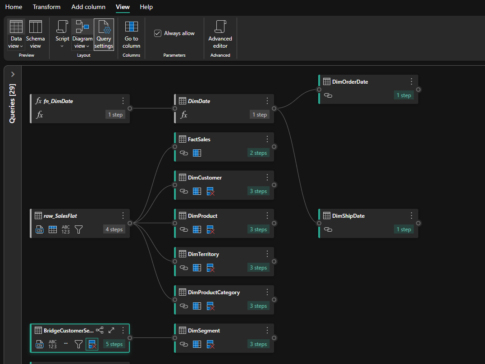

What you will produce
- Star schema from flat export
- Relationship setup reference
- Role-playing date tables
- Customer segment bridge
- Composite-model decision notes
Source files
https://raw.githubusercontent.com/Coding-Forge/PBI-Advanced-Factory/main/data/sales-flat.csvhttps://raw.githubusercontent.com/Coding-Forge/PBI-Advanced-Factory/main/data/customer-segments.csvhttps://raw.githubusercontent.com/Coding-Forge/PBI-Advanced-Factory/main/data/targets.csvhttps://raw.githubusercontent.com/Coding-Forge/PBI-Advanced-Factory/main/data/territory-contacts.csvhttps://raw.githubusercontent.com/Coding-Forge/PBI-Advanced-Factory/main/data/regional-notes.csvhttps://raw.githubusercontent.com/Coding-Forge/PBI-Advanced-Factory/main/data/territory-manager.csvhttps://raw.githubusercontent.com/Coding-Forge/PBI-Advanced-Factory/main/data/monthly-targets-wide.csvhttps://raw.githubusercontent.com/Coding-Forge/PBI-Advanced-Factory/main/data/product-attributes-transposed.csvhttps://raw.githubusercontent.com/Coding-Forge/PBI-Advanced-Factory/main/data/customer-addresses-sparse.csvThe last six files are practice-only: they exist so you can try Split Column, Merge Queries, Unpivot, Transpose, and Fill on real messy data. They are not related to FactSales and do not need to stay in your finished model — you can disable their load in Close & Apply once you finish the practice step.
Step-by-step walkthrough
- Create or open your Power BI file.
Open Power BI Desktop. If you are continuing the workshop solution, open the file in
pbi-local\. If this is your first hands-on step, create a new blank report and save it as a Power BI file before importing data. - Import
sales-flat.csvfrom the web.- On the Home ribbon, click Get data, then click Web.
- Paste the
sales-flat.csvURL from the Source files section above, then click OK. - If prompted for authentication, choose Anonymous and click Connect.
- In the Navigator preview, click Transform data to open Power Query Editor.
- Rename the raw sales query.
In the Queries pane on the left, double-click the query name and rename it to
raw_SalesFlat. Keep this query as your source reference; do not build your model directly on top of it.FYI — why keep a separate "raw_" staging query.
Loading the source data into its own untouchedraw_query, then buildingFactSalesand the dimension queries as References off of it, means the CSV is only imported from the web once no matter how many downstream queries you create. If the source format ever changes, you fix the oneraw_query and every table that references it stays consistent. Using Duplicate instead of Reference would copy the import step into each new query, so a source fix would have to be repeated everywhere. - Inspect
raw_SalesFlatbefore you model it.Before you split this data into
FactSalesand its dimensions, spend a few minutes looking at what is actually in the column, not just its name. The statistics and quality bars below are what tell you whether a column is a safe relationship key, whether it needs cleanup first, and how a wide table like this should be split for a fast, well-shaped model.- Click View > Schema view to see every column's name and data type in one compact list — a fast way to confirm keys such as
CustomerKey,ProductKey, andTerritoryKeyare typed as text (not whole number) before you build relationships on them. - Switch back to View > Data view, then open the dropdown under View > Query settings (or the Data view dropdown) and turn on Enable column profile, Show column quality details, and Show column profile in details pane.
- Look at the colored Column quality bar above each column header — the percentage split of Valid, Error, and Empty tells you at a glance whether a column is safe to use as a relationship key or a measure input; a key column with any Empty percentage will break relationship matches.
- Click a column header (for example
ShipDate) to open the Column profile details pane and review its statistics — Count, Error count, Null count, Distinct count, Unique count, Min, Max, and Average — plus the value-distribution chart. - Use Distinct count to decide how a column should be modeled:
CustomerKeyhas far fewer distinct values thanSalesOrderLineKey, which is exactly why it belongs on a narrowDimCustomertable with one row per distinct value, related one-to-many back to the wideFactSalestable — a smaller, low-cardinality dimension keeps relationships fast and avoids repeating descriptive text likeCustomerNameon every transaction row.

Turning on column profiling from the View ribbon; the colored bars above each column are the column-quality indicators. 
Query Profile details pane for a selected column, including statistics and a value-distribution chart. FYI — inspect before you transform.
Schema view, Query Profile, and Column quality never change your data — they only change what you can see about it. Checking column quality and distinct counts right after every import, before you split, filter, or rename anything, is what tells you which columns are safe relationship keys, which need cleanup first, and which are low-cardinality enough to become their own dimension table. Catching a bad or empty key column here takes minutes; finding it later as a broken relationship or a wrong total on a report page takes much longer. - Click View > Schema view to see every column's name and data type in one compact list — a fast way to confirm keys such as
- Import
customer-segments.csvfrom the web.- Click Home > Get data > Web again.
- Paste the
customer-segments.csvURL from the Source files section, click OK, choose Anonymous, then click Connect. - Click Transform data, then rename the new query
raw_CustomerSegments.
- Import
targets.csvfrom the web.- Click Home > Get data > Web a third time.
- Paste the
targets.csvURL from the Source files section, click OK, choose Anonymous, then click Connect. - Click Transform data, then rename the new query
raw_Targets.
- Create the sales fact query.
Right-click
raw_SalesFlatin the Queries pane and choose Reference. Rename the new queryFactSales. Use this exact column list so relationship keys and later DAX measures are not missed.Column Action Why SalesOrderLineKeyKeep Unique transaction line identifier. OrderDateKeep Relationship to DimOrderDate.ShipDateKeep Relationship to DimShipDate.InvoiceDateKeep Optional invoice-date analysis. CustomerKeyKeep Relationship to DimCustomer.ProductKeyKeep Relationship to DimProduct.TerritoryKeyKeep Relationship to DimTerritory.QuantityKeep Additive quantity measure source. UnitPriceKeep Validation and derived price metrics. UnitCostKeep Validation and derived cost/margin metrics. SalesAmountKeep Core sales measure source. GrossMarginKeep Core gross margin measure source. CustomerName,CustomerType,CustomerState,CustomerRegionRemove from FactSalesThese belong in DimCustomer.ProductName,ProductCategory,ProductSubcategoryRemove from FactSalesThese belong in DimProduct.TerritoryName,TerritoryRegionRemove from FactSalesThese belong in DimTerritory.FYI — fact vs. dimension tables (star schema).
FactSaleskeeps only the columns that are numeric/measurable (quantities, prices, amounts) or that are foreign keys pointing to a dimension (CustomerKey,ProductKey,TerritoryKey). Descriptive columns likeCustomerNameorProductCategorymove to their own dimension tables instead. This "star schema" shape — one fact table surrounded by narrow dimension tables joined on keys — is what makes Power BI's DAX engine fast and its relationships unambiguous; a wide, denormalized table with everything in one place would be slower to query and harder to relate correctly. - Create customer, product, and territory dimensions.
- Right-click
raw_SalesFlatand choose Reference. Repeat this two more times so you have three new queries in total. - Rename the three new queries
DimCustomer,DimProduct, andDimTerritory. - In each query, select only the columns listed in the Columns to keep column below (Ctrl-click each column header to multi-select), right-click any selected column header, and choose Remove Other Columns.
- In each of the three queries, select all of the remaining columns (click the first column header, then Shift-click the last), right-click any selected column header, and choose Remove Duplicates.
Query Columns to keep Columns to remove DimCustomerCustomerKey,CustomerName,CustomerType,CustomerState,CustomerRegionAll sales, date, product, and territory columns. DimProductProductKey,ProductName,ProductCategory,ProductSubcategoryAll sales, date, customer, and territory columns. DimProductCategoryProductCategorySalesOrderLineKey,OrderDate,ShipDate,InvoiceDate,CustomerKey,CustomerName,CustomerType,CustomerState,CustomerRegion,ProductKey,ProductName,ProductSubcategory,TerritoryKey,TerritoryName,TerritoryRegion,Quantity,UnitPrice,UnitCost,SalesAmount,GrossMargin. Remove duplicate rows so each category appears once.DimTerritoryTerritoryKey,TerritoryName,TerritoryRegionAll sales, date, customer, and product columns. Why remove duplicates:raw_SalesFlatis at transaction grain, so the same customer, product, or territory appears on many rows. A dimension table must have exactly one row per key value (CustomerKey,ProductKey,TerritoryKey). If you skip Remove Duplicates, the dimension will have repeated key values, Power BI will not be able to create a proper one-to-many relationship from that table toFactSales, and totals in your visuals will be inflated or incorrect. Always remove duplicates on the dimension side, never on the fact table. - Right-click
- Create the product category lookup.
FactTargetsis stored at product-category grain, whileDimProductis stored at product grain. Do not relateDimProduct[ProductCategory]directly toFactTargets[ProductCategory]if Power BI detects many-to-many cardinality. Instead, referenceDimProduct, rename the queryDimProductCategory, removeProductKey,ProductName, andProductSubcategory, keepProductCategoryas the only remaining column, then select that column, right-click the column header, and choose Remove Duplicates so each category appears once before loading it as a small lookup dimension.FYI — why grain mismatches need their own lookup table.
DimProducthas one row per product, so itsProductCategorycolumn repeats for every product in a category — that is many-to-many when related directly toFactTargets, which is already at category grain. Power BI cannot reliably filter both directions across a many-to-many relationship. Adding a smallDimProductCategorytable with one row per distinct category gives bothDimProductandFactTargetsa clean one-to-many relationship to a single, unambiguous source of category values. - Create date role tables.
Create date tables for at least Order Date and Ship Date. For a beginner-friendly path, duplicate or reference a completed date table into
DimOrderDateandDimShipDate. Use one of the approved patterns below.FYI — why two separate date tables (role-playing dimensions).
FactSaleshas two date columns,OrderDateandShipDate, but a single date table can only be related to one active relationship per fact table at a time. Loading two independent copies —DimOrderDateandDimShipDate— lets each play its own "role": one always relates to order date, the other to ship date, so you can filter or use time intelligence against either one without switching relationships on and off.Answer key / suggested date table patterns
Use Power Query when the date table should be reusable across reports, parameterized by start/end date, aligned to a configurable fiscal year, or enriched with holidays before load. Create a blank query named
fn_DimDateand paste this function in Advanced Editor.let fn_DimDate = ( StartDate as date, EndDate as date, optional FiscalYearStartMonth as nullable number, optional Holidays as nullable table ) as table => let FiscalStartMonth = if FiscalYearStartMonth = null then 7 else FiscalYearStartMonth, _ValidateFiscalMonth = if FiscalStartMonth < 1 or FiscalStartMonth > 12 then error "FiscalYearStartMonth must be a number from 1 through 12." else FiscalStartMonth, DayCount = Duration.Days(EndDate - StartDate) + 1, Source = if DayCount < 1 then error "EndDate must be on or after StartDate." else List.Dates(StartDate, DayCount, #duration(1, 0, 0, 0)), Dates = Table.FromList(Source, Splitter.SplitByNothing(), {"Date"}), ChangedType = Table.TransformColumnTypes(Dates, {{"Date", type date}}), AddYearMonthDay = Table.AddColumn(ChangedType, "YearMonthDay", each Date.Year([Date]) * 10000 + Date.Month([Date]) * 100 + Date.Day([Date]), Int64.Type), AddYearMonth = Table.AddColumn(AddYearMonthDay, "YearMonth", each Date.Year([Date]) * 100 + Date.Month([Date]), Int64.Type), AddYear = Table.AddColumn(AddYearMonth, "Year", each Date.Year([Date]), Int64.Type), AddQuarter = Table.AddColumn(AddYear, "Quarter", each Date.QuarterOfYear([Date]), Int64.Type), AddMonth = Table.AddColumn(AddQuarter, "Month", each Date.Month([Date]), Int64.Type), AddDay = Table.AddColumn(AddMonth, "Day", each Date.Day([Date]), Int64.Type), AddWeek = Table.AddColumn(AddDay, "Week", each let WeekStart = Date.StartOfWeek([Date], Day.Monday) in Date.Year(WeekStart) * 10000 + Date.Month(WeekStart) * 100 + Date.Day(WeekStart), Int64.Type), AddWeekNumber = Table.AddColumn(AddWeek, "WeekNumber", each Date.WeekOfYear([Date], Day.Monday), Int64.Type), AddYearWeekNumber = Table.AddColumn(AddWeekNumber, "YearWeekNumber", each Date.Year([Date]) * 100 + Date.WeekOfYear([Date], Day.Monday), Int64.Type), AddMonthName = Table.AddColumn(AddYearWeekNumber, "MonthName", each Date.ToText([Date], "MMMM", "en-US"), type text), AddMonthShortName = Table.AddColumn(AddMonthName, "MonthShortName", each Date.ToText([Date], "MMM", "en-US"), type text), AddYearMonthName = Table.AddColumn(AddMonthShortName, "YearMonthName", each Date.ToText([Date], "yyyy-MMM", "en-US"), type text), AddQuarterName = Table.AddColumn(AddYearMonthName, "QuarterName", each "Q" & Text.From([Quarter], "en-US"), type text), AddYearQuarter = Table.AddColumn(AddQuarterName, "YearQuarter", each Text.From([Year], "en-US") & "-Q" & Text.From([Quarter], "en-US"), type text), AddWeekdayName = Table.AddColumn(AddYearQuarter, "WeekdayName", each Date.ToText([Date], "dddd", "en-US"), type text), AddWeekdayShortName = Table.AddColumn(AddWeekdayName, "WeekdayShortName", each Date.ToText([Date], "ddd", "en-US"), type text), AddDayOfWeekNumber = Table.AddColumn(AddWeekdayShortName, "DayOfWeekNumber", each Date.DayOfWeek([Date], Day.Monday) + 1, Int64.Type), AddIsWeekend = Table.AddColumn(AddDayOfWeekNumber, "IsWeekend", each [DayOfWeekNumber] >= 6, type logical), AddFiscalYearNumber = Table.AddColumn(AddIsWeekend, "FiscalYearNumber", each if Date.Month([Date]) >= FiscalStartMonth then Date.Year([Date]) + 1 else Date.Year([Date]), Int64.Type), AddFiscalYear = Table.AddColumn(AddFiscalYearNumber, "FiscalYear", each "FY" & Text.From([FiscalYearNumber], "en-US"), type text), AddFiscalQuarter = Table.AddColumn(AddFiscalYear, "FiscalQuarter", each Number.IntegerDivide(Number.Mod(Date.Month([Date]) - FiscalStartMonth + 12, 12), 3) + 1, Int64.Type), AddFiscalPeriod = Table.AddColumn(AddFiscalQuarter, "FiscalPeriod", each [FiscalYear] & "-Q" & Text.From([FiscalQuarter], "en-US"), type text), AddFiscalYearQuarterNumber = Table.AddColumn(AddFiscalPeriod, "FiscalYearQuarterNumber", each [FiscalYearNumber] * 10 + [FiscalQuarter], Int64.Type), HolidaySource = if Holidays = null then #table(type table [Date = date, HolidayName = text], {}) else Table.TransformColumnTypes(Holidays, {{"Date", type date}, {"HolidayName", type text}}), MergeHolidays = Table.NestedJoin(AddFiscalYearQuarterNumber, {"Date"}, HolidaySource, {"Date"}, "Holiday", JoinKind.LeftOuter), ExpandHolidays = Table.ExpandTableColumn(MergeHolidays, "Holiday", {"HolidayName"}, {"HolidayName"}), AddIsHoliday = Table.AddColumn(ExpandHolidays, "IsHoliday", each [HolidayName] <> null, type logical), AddIsBusinessDay = Table.AddColumn(AddIsHoliday, "IsBusinessDay", each not [IsWeekend] and not [IsHoliday], type logical) in AddIsBusinessDay in fn_DimDateExample lab query:
let Source = fn_DimDate(#date(2023, 1, 1), #date(2029, 12, 31), 7, null) in SourceUse DAX when you need a quick model-local date table. This calculated table starts on January 1 three years before the current year and ends on December 31 three years after the current year.
DimDate = VAR CurrentYear = YEAR ( TODAY () ) VAR StartDate = DATE ( CurrentYear - 3, 1, 1 ) VAR EndDate = DATE ( CurrentYear + 3, 12, 31 ) RETURN ADDCOLUMNS ( CALENDAR ( StartDate, EndDate ), "YearMonthDay", YEAR ( [Date] ) * 10000 + MONTH ( [Date] ) * 100 + DAY ( [Date] ), "YearMonth", YEAR ( [Date] ) * 100 + MONTH ( [Date] ), "Year", YEAR ( [Date] ), "Quarter", QUARTER ( [Date] ), "MonthNumber", MONTH ( [Date] ), "Day", DAY ( [Date] ), "Week", VAR WeekStart = [Date] - WEEKDAY ( [Date], 2 ) + 1 RETURN YEAR ( WeekStart ) * 10000 + MONTH ( WeekStart ) * 100 + DAY ( WeekStart ), "WeekNumber", WEEKNUM ( [Date], 2 ), "YearWeekNumber", YEAR ( [Date] ) * 100 + WEEKNUM ( [Date], 2 ), "MonthName", FORMAT ( [Date], "MMMM" ), "WeekdayName", FORMAT ( [Date], "dddd" ) )After creating either pattern, mark the table as a date table using the
Datecolumn. The Power Query function returns numeric attributes for year-month-day, year-month, year, quarter, month, day, week, week number, year-week number, weekday number, and fiscal sort keys; text attributes for month, short month, year-month, quarter, weekday, short weekday, fiscal year, and fiscal period; and holiday/business-day attributes when supplied.Side note: Larger enterprise date dimensions often add period boundary dates, refresh-relative offsets, current-period flags, and ISO week attributes. Keep those optional in Lab 1 because they depend on business calendar rules, refresh timing, and whether the organization uses ISO week calendars. - Create
FactTargetsfromraw_Targets.- Right-click
raw_Targetsand choose Reference. - Rename the new query
FactTargets. - Keep only
TargetMonth,TerritoryKey,ProductCategory, andTargetSalesAmount; remove any other columns.
- Right-click
- Create
BridgeCustomerSegmentandDimSegmentfromraw_CustomerSegments.- Right-click
raw_CustomerSegmentsand choose Reference. Rename itBridgeCustomerSegment. Keep onlyCustomerKeyandSegment. - Right-click
BridgeCustomerSegmentand choose Reference again. Rename itDimSegment. RemoveCustomerKey, keep onlySegment, then remove duplicate rows so each segment appears once.
FYI — why a bridge table instead of a direct relationship.
A customer can belong to more than one segment, soraw_CustomerSegmentshas multiple rows perCustomerKey. RelatingDimCustomerstraight toDimSegmentwould be many-to-many.BridgeCustomerSegmentkeeps the full (CustomerKey,Segment) pair list, soDimCustomer-to-bridge andDimSegment-to-bridge can both stay clean one-to-many relationships instead of one ambiguous many-to-many relationship. - Right-click
- Practice shaping data: import the six practice files.
The rest of Power Query's everyday commands are easiest to learn by using them on genuinely messy data, not by reading about them. Import all six practice files now the same way you imported
sales-flat.csv— Home > Get data > Web, paste the URL from the Source files section, choose Anonymous, click Connect, then Transform data — and rename each query to match its file name (for example,territory-contacts.csvbecomesraw_TerritoryContacts). You will reshape each one in the steps below, then choose whether to keep it loaded. - Split Column by Delimiter — clean up
raw_TerritoryContacts.- Open
raw_TerritoryContacts. ItsContactNamecolumn is stored as"Last, First"and itsLocationcolumn as"City, ST"— both need to be split before they are usable. - Select the
ContactNamecolumn, click Home > Split Column > By Delimiter, choose Comma as the delimiter and Each occurrence, then click OK. Rename the two resulting columnsLastNameandFirstName. - Repeat for the
Locationcolumn, splitting it intoCityandStateCode.
- Open
- Use First Row as Headers and Remove Rows — clean up
raw_RegionalNotes.- Open
raw_RegionalNotes. The import lands with a title row from the source file (Regional Notes Export - Confidential...) sitting above the real header row, so every column is namedColumn1,Column2, etc. and the real column names appear as the first row of data. - Click Home > Remove Rows > Remove Top Rows, enter
1, and click OK to drop the confidential title row. - Click Home > Use First Row as Headers to promote the next row (
TerritoryKey,Note,ReviewedBy) into real column names. - Compare this to
BridgeCustomerSegment's Promoted headers step, shown in the screenshot below — that query's source file did not need a Remove Rows step first because it had no title row above the header.

BridgeCustomerSegment's Applied Steps pane, showing Promoted headers and Filtered rows alongside the M code that generates them. - Open
- Merge Queries — add manager contacts to
DimTerritory.- Open
raw_TerritoryManagerand confirm it has one row perTerritoryKeywithManagerNameandManagerEmail. - Open
DimTerritory, click Home > Merge Queries > Merge Queries, chooseraw_TerritoryManageras the table to merge, selectTerritoryKeyin both tables, set Join kind to Left Outer (keeps everyDimTerritoryrow even if a match is missing), and click OK. - Click the expand icon on the new merged column and choose only
ManagerNameandManagerEmailto add them as new columns onDimTerritory.
FYI — Merge Queries vs. a model relationship.
Merge Queries pulls columns from one query into another during data load, producing one wider table — useful when you want the combined columns to always travel together, like adding a manager's name directly ontoDimTerritory. A model relationship instead keeps the tables separate and lets DAX cross-filter between them at query time. Use Merge Queries for enrichment that belongs permanently on a dimension; use a relationship when the two tables should stay independent and related in the model. - Open
- Unpivot Columns — reshape
raw_MonthlyTargetsWidefor the model.- Open
raw_MonthlyTargetsWide. It has one row perTerritoryKey/ProductCategorypair and twelve separate month columns (JanthroughDec) — a "wide" shape that is hard to filter or slice by month in a report. - Select the
JanthroughDeccolumns (clickJan, then Shift-clickDec), right-click any of the selected headers, and choose Unpivot Columns. - Rename the two new columns
AttributetoMonthandValuetoTargetSalesAmount. The table is now "tall" — one row per territory, category, and month — which matches the grainFactTargetsalready uses.
FYI — why Power BI prefers tall (unpivoted) tables.
A wide table with one column per month cannot be sliced by aMonthfield or related to a date dimension — Power BI would need a separate measure for every single column. An unpivoted, tall table has oneMonthcolumn and oneValuecolumn, so a single measure and a single date relationship cover every month automatically. This is the same reasonFactTargetsstoresTargetMonthas one column instead of twelve. - Open
- Transpose — reshape
raw_ProductAttributesTransposed.- Open
raw_ProductAttributesTransposed. It was exported with attributes (Weight,Color,Material,WarrantyYears) as rows and products (P001–P004) as columns — the opposite of how a dimension table should be shaped. - Click Transform > Transpose to swap rows and columns, so each attribute becomes its own column and each product becomes its own row.
- Click Home > Use First Row as Headers to promote the new header row (
Attribute,P001,P002,P003,P004, now transposed intoProductKey,Weight,Color,Material,WarrantyYears).
- Open
- Fill Down — repair
raw_CustomerAddressesSparse.- Open
raw_CustomerAddressesSparse. Its source only printsRegionandSegmenton the first row of each small group of customers, leaving the rest blank — a common export pattern from tools that avoid repeating a label visually. - Select the
Regioncolumn, click Transform > Fill > Down, then repeat for theSegmentcolumn. Every blank cell is replaced with the nearest non-blank value above it.
FYI — check your assumption before filling down.
Fill Down assumes the blank cells truly belong to the same group as the value above them — that is usually true for a "printed once" export like this one, but it is not always true for genuinely missing data. Always confirm the source file's grouping logic before filling down in a real project; filling down over unrelated blanks silently invents wrong values. - Open
- Column From Examples, Custom Column, and Invoke a Function — practice on
FactSales.- Open
FactSales. Click Add Column > Custom Column, name itMargin %, enter the formula= [GrossMargin] / [SalesAmount], and click OK to add a calculated column during data load (you will build the equivalent as a DAX measure in Lab 02 — this is the same math done in Power Query instead). - Click Add Column > Column From Examples > From Selection, select the
SalesOrderLineKeycolumn, and in the new column typeSO-1001for the first row; Power Query should infer a"SO-" & Text.From([SalesOrderLineKey])transformation and apply it to every row. Rename the resultOrderLabel. - To see Invoke a Function in the same lab, open
DimDateand look at its single applied step — it is the result of invoking thefn_DimDatefunction query once to generate the whole table. To try the row-by-row version yourself, click Add Column > Invoke Custom Function on any query, choose a function query such asfn_DimDate, and map its parameters to columns on the current table; Power Query then runs that function once per row instead of once overall. - Remove the practice-only
Margin %andOrderLabelcolumns fromFactSalesbefore continuing, since the real[Gross Margin %]measure you build later in DAX should be the one source of truth for margin.
- Open
- Disable load for the practice-only queries.
Right-click each of the six practice queries (
raw_TerritoryContacts,raw_RegionalNotes,raw_TerritoryManager,raw_MonthlyTargetsWide,raw_ProductAttributesTransposed,raw_CustomerAddressesSparse) and uncheck Enable load, since they were only imported to practice these transforms and are not part of the star schema you are about to build relationships for. Keep the enrichedDimTerritorymerge if you want to carry the manager columns forward. - Close and apply.
Confirm data types before loading. Dates should be Date, quantities should be whole numbers, currency/amount columns should be decimal or fixed decimal, and keys should be text unless you intentionally model them otherwise.
- Create relationships in Model view.
Use the relationship setup reference below to create each relationship explicitly. The core lab path uses one-to-many cardinality and single-direction filtering from dimensions into facts or bridge tables.
From table From column Key role To table To column Key role Cardinality Cross-filter direction Active? DimCustomerCustomerKeyPK FactSalesCustomerKeyFK One-to-many Single Yes DimProductProductKeyPK FactSalesProductKeyFK One-to-many Single Yes DimTerritoryTerritoryKeyPK FactSalesTerritoryKeyFK One-to-many Single Yes DimOrderDateDatePK FactSalesOrderDateFK One-to-many Single Yes DimShipDateDatePK FactSalesShipDateFK One-to-many Single Yes DimTerritoryTerritoryKeyPK FactTargetsTerritoryKeyFK One-to-many Single Yes DimProductCategoryProductCategoryPK DimProductProductCategoryFK One-to-many Single Yes DimProductCategoryProductCategoryPK FactTargetsProductCategoryFK One-to-many Single Yes DimSegmentSegmentPK BridgeCustomerSegmentSegmentFK One-to-many Single Yes DimCustomerCustomerKeyPK BridgeCustomerSegmentCustomerKeyFK One-to-many Single Yes Crow's-foot model view:
DimCustomer ||--o{ FactSales : CustomerKey DimProduct ||--o{ FactSales : ProductKey DimTerritory ||--o{ FactSales : TerritoryKey DimOrderDate ||--o{ FactSales : OrderDate DimShipDate ||--o{ FactSales : ShipDate DimTerritory ||--o{ FactTargets : TerritoryKey DimProductCategory ||--o{ DimProduct : ProductCategory DimProductCategory ||--o{ FactTargets : ProductCategory DimCustomer ||--o{ BridgeCustomerSegment : CustomerKey DimSegment ||--o{ BridgeCustomerSegment : SegmentBridge-table note: Keep relationships single-direction for the core lab. If a segment slicer must directly filter sales, discuss the ambiguity and performance tradeoffs before using bidirectional filtering, or use an intentional DAX pattern such asTREATAS.FYI — cardinality and cross-filter direction.
Cardinality describes how many rows on each side of a relationship can match (one-to-many is the healthy default for a star schema: one dimension row can relate to many fact rows). Cross-filter direction controls which way a filter travels: Single means the dimension filters the fact table but not the reverse; Both lets filters flow in both directions, which can create ambiguous results when several tables filter each other in a loop. Start every relationship single-direction and one-to-many; only switch to bidirectional when a specific report requirement needs it and you have tested for ambiguity. - Validate the model.
Create a simple table or matrix with CustomerName, ProductCategory, TerritoryRegion, and SalesAmount. Filter by date and segment to confirm the relationships behave as expected.
- Trace query lineage with Diagram view.
Now that every query is built and related, go back to Power Query and click View > Diagram view to see the whole picture at once: every query as a box, with a line connecting it to the queries it references.

Diagram view showing how every query in this lab traces back to raw_SalesFlatorfn_DimDate.FYI — why lineage matters after the model is built.
Diagram view confirmsFactSales,DimCustomer,DimProduct, andDimTerritoryall trace back to the sameraw_SalesFlatquery, exactly as this lab's naming convention intends. This is the tool to reach for whenever you need to trace object dependencies — for example, before changing a source file's column names or deleting a query, use Diagram view first to confirm nothing downstream still depends on it. - Review composite model or DirectQuery choices.
This optional lab is marked Verify for Gov. Identify which tables are good Import candidates, which sources might require DirectQuery, where Dual dimensions could help, and what gateway, tenant, source, and performance tradeoffs must be validated before using the pattern hands-on.
FYI — Import vs. DirectQuery vs. Dual.
Import copies data into memory for the fastest report performance but only reflects data as of the last refresh. DirectQuery sends live queries to the source for real-time results but is limited by source performance and DAX restrictions. Dual lets a table behave as either, chosen automatically per query, which is useful for small dimension tables shared between Import fact tables and DirectQuery fact tables in a composite model. Choose based on data freshness needs and source query performance, not by default.